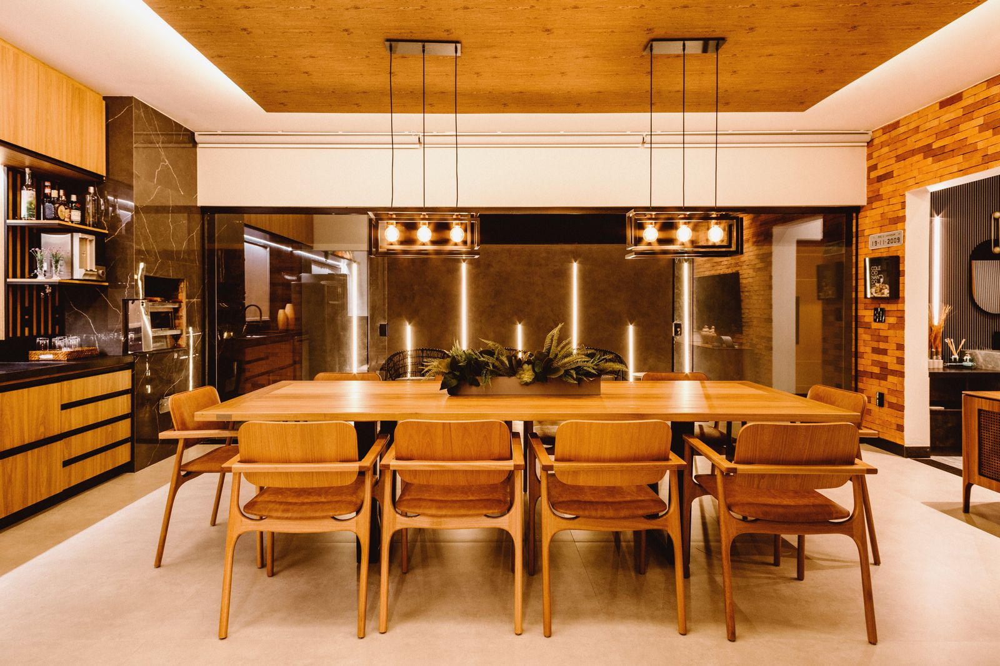
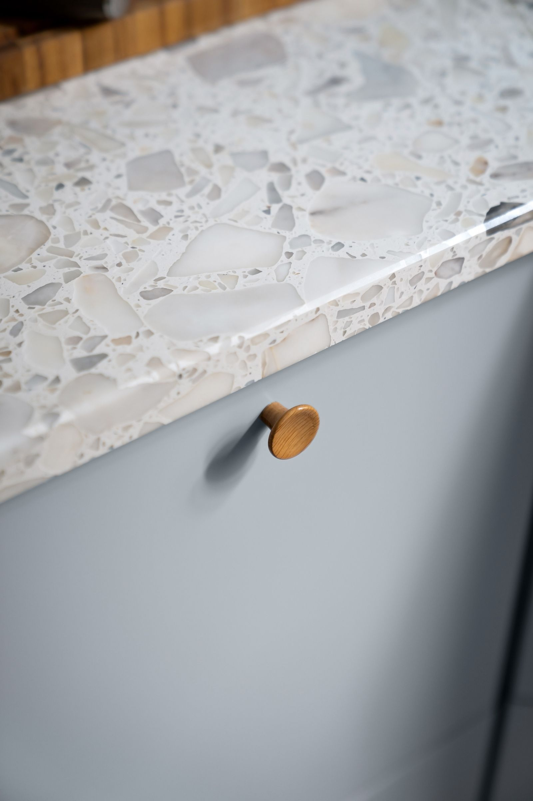
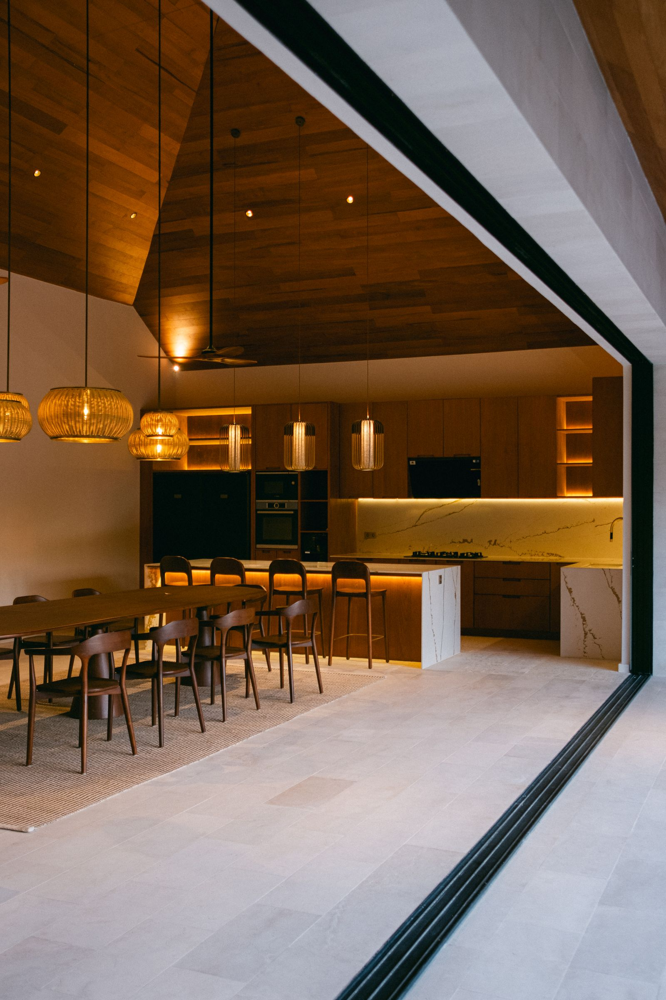
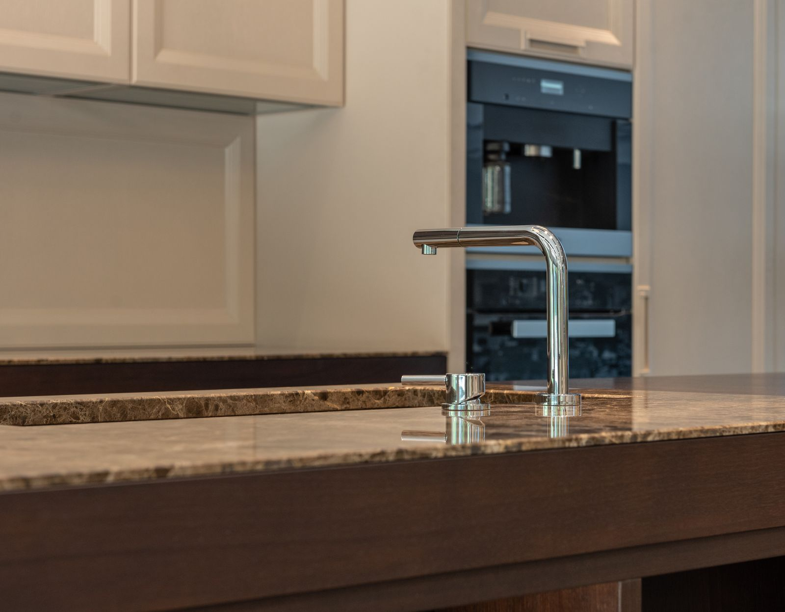
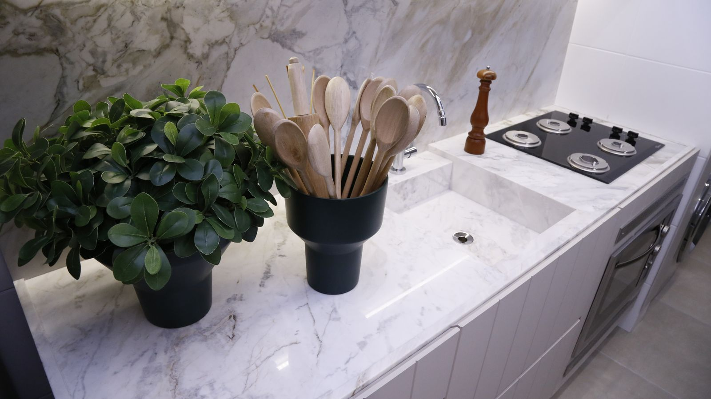
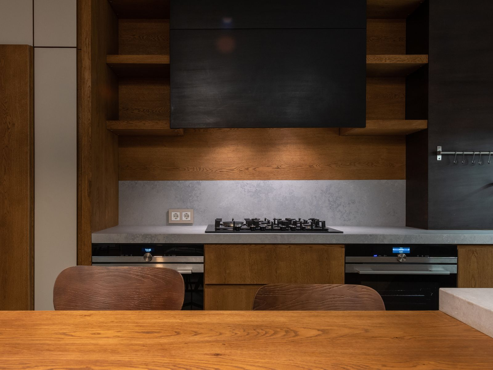
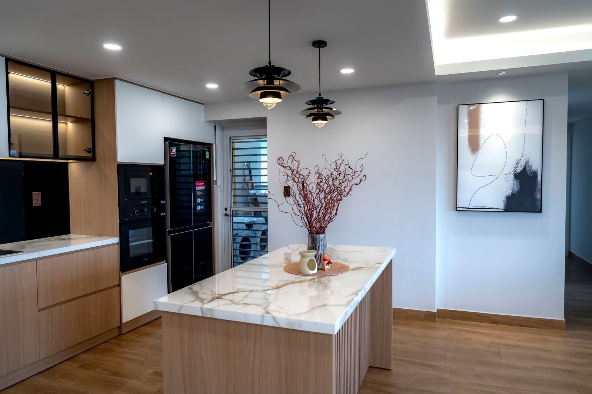
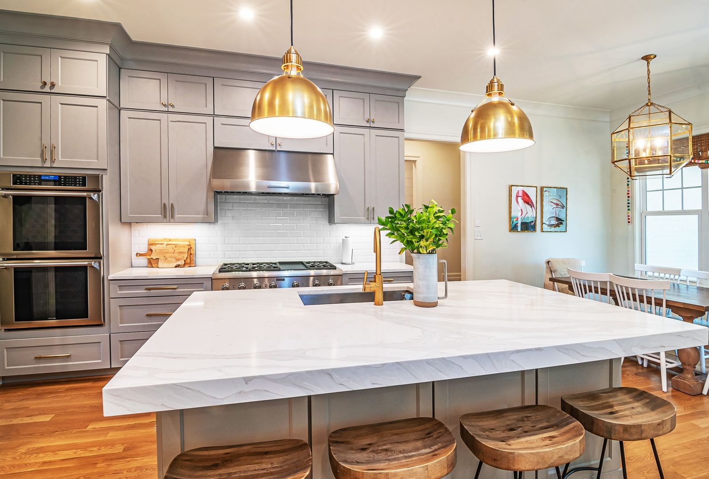

- Location
- Miami, FL
- Area
- 3,400 sqft
- Year
- 2025
Bayshore Residence is a kitchen and dining renovation shaped around a single idea: let the light and the water do most of the talking. Warm oak, honed stone, and a quiet material palette give the space room to breathe, while every surface was chosen to age well under daily use.
The brief was simple in words and demanding in practice: a family kitchen that could host twelve people on a Sunday and still feel calm on a Tuesday morning. The existing floor plan was opened toward the water, replacing a run of upper cabinetry with clerestory glazing that pulls bay light across the island through the entire afternoon.
Cabinetry is rift-cut white oak, left unstained so it will silver gently over the coming years rather than fight the process. The island is a single block of honed dolomite, chosen over polished marble specifically for how it wears — every mark becomes part of the surface instead of a flaw in it.
Dining sits adjacent rather than enclosed, separated from the kitchen only by a change in ceiling height. The result is a home that works as hard as any Miami kitchen needs to, without ever looking like it's trying.







